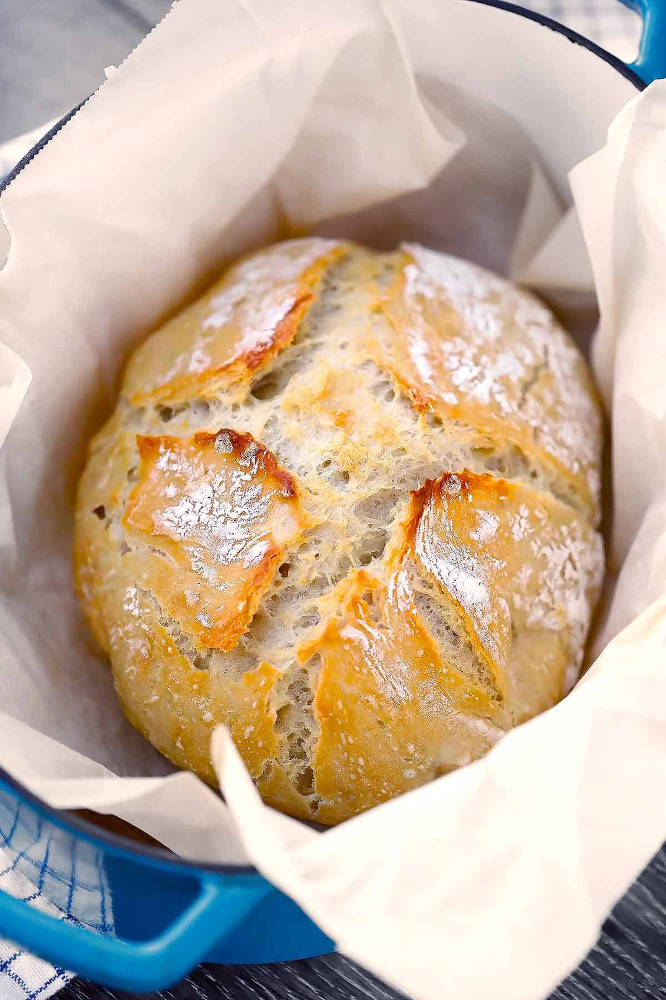

Bread

Easy No-Knead Dutch Over Bread Recipe
Ingredients
- 1.5 Cups Warm Water
- 1 Packet (2.25 tsp) Active Dry Yeast
- 0.5 tsp Salt
- 3.25 cups All Purpose Flour
Steps
- Mix all ingredients together in a bowl
- Cover with a towel and let rise for 2 hours
- Put dough into parchment paper-lined dutch oven
- Bake in covered dutch oven for 45 min at 450 deg F